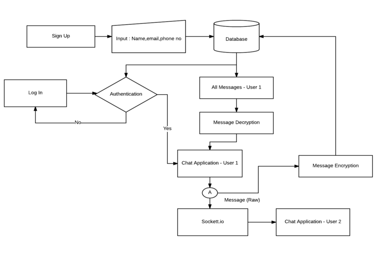
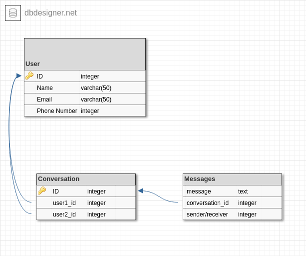

MOTIVATION
In my sophomore year I took a Linear Algebra course during which I was introduced to many basic encryption techniques including matrix encryption.I did this project as the part of the course where I was required to give an application of encryption in real life.
APPLICATION FLOW
The initial phase of the application is the sign up phase. It requires every user to register by providing name, email and phone number. After the signup the user can login with their credentials for accessing chat application.The conversation between the users are encrypted and the messages are stored on database in encrypted form. We are using matrix multiplication method for message encryption.
ARCHITECTURE
ENCRYPTION/DECRYPTION PROCESS
We are using matrix multiplication for message encryption. The basic concept is to convert your message into a matrix and then multiply it with another non-signular matrix. To convert the message into matrix we can use basic encoding method where A is denoted as 0, B as 1 and so on. The encryption matrix A is dynamically generated for every user by using their contact numbers. Every user will have an unique encryption matrix which will be non-singular.So if your message matrix is X and your encryption matrix is A, then the encrypted message matrix will be Y = AX. This encrypted message will be stored in the database.The original message can be retrieved as X = INVERSE(A)*Y, where INVERSE() calculates the inverse of matrix. After getting the original matrix, the message can be obtained by assigning back the characters to the numbers.